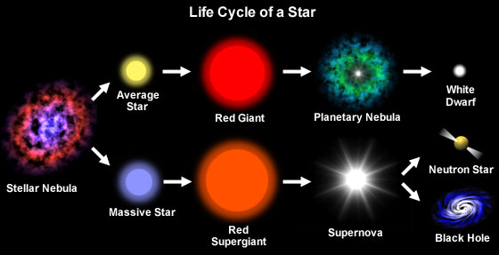

- Stars Home
- Star Life Cycle
- Star Death
The Star Life Cycle
Low Mass Stars
Red Giant
Stars spend most of their lives fusing hydrogen nuclei in their core to create helium. When the hydrogen in the center of a star runs out, the star begins to use hydrogen further out from its core. This causes the outer layers of the star to expand and cool. Over time, the star grows to more than 400 times its original size. As the star cools, it changes color and glows redder. The star is now a red giant. Red giants can swallow up planets as they expand. The Sun will reach its red giant stage in about 5,000 million years. During this phase, it will probably engulf the inner planets of our Solar System which could include the Earth. But don't worry! This won't happen for a very long time.
White Dwarf
When a low-mass star runs out of fuel, it becomes a white dwarf. This is the bright, hot, dense core which remains after a planetary nebula event. About 6% of all known stars in our part of the Milky Way are white dwarfs. White dwarfs are made of carbon and oxygen. This was created by the star by nuclear fusion during its main sequence and red giant phases. This material is compacted into a relatively small space, which makes white dwarfs very dense. Imagine the mass of the Sun, squashed to the size of the Earth. A matchbox of white dwarf material would weigh the same as fifteen elephants!
High Mass Stars
Red Supergiant
These have the largest radius of all known stars. They have a low surface temperature below 4,100 K. This is very cool for a star and makes them shine with a red color. The star Betelgeuse in the constellation of Orion is a red supergiant. Red supergiants evolve from large main sequence stars. These are stars which contain more than 8 times the mass of our Sun. Some stars are born with more than 200 times the mass of the Sun!